FASHION / ARTICLE 003
COLUMN
次世代archive来日確定!!! / iPod shuffleサン
次世代archive来日確定!!! iPod shuffleサン
人生一小洒落音楽再生機
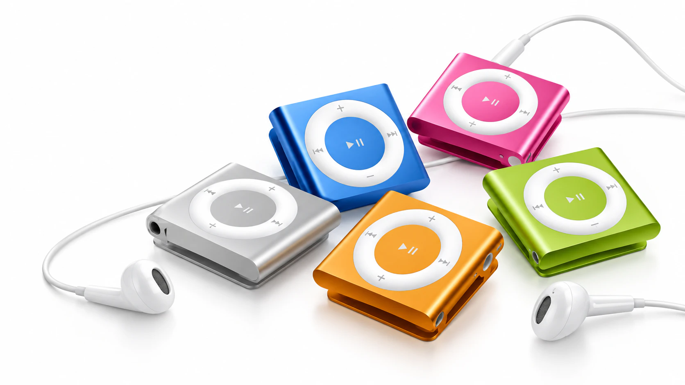
今回は、今さら手に入れた「iPod shuffle」について。
実際に使ってみたら、音楽プレイヤーとしてだけじゃなく、これ普通にファッションとしてかっこよくない⁉️と思い始めました。
古いApple製品をarchiveとして見る面白さまで、勝手に考えてみます‼️
目次
おい！みんな！
なんなんだこのMac miniみてーな小さいクリップは！
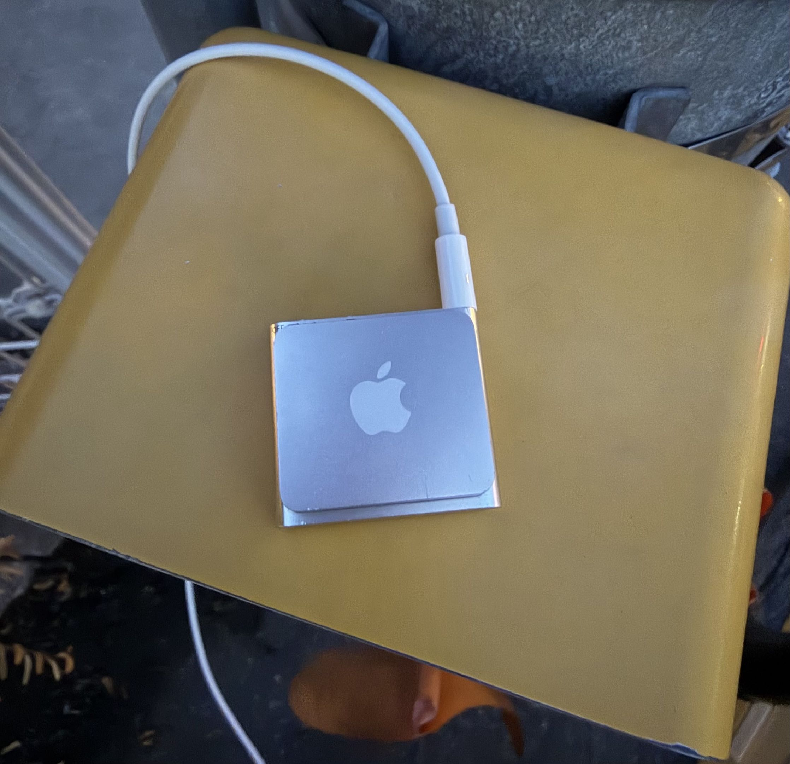
実はこれ、音楽再生機器なんです。iPodっていう神(ｲｪｽ)です🙏🏻
正確には「iPod shuffle」。今回手に入れたのは第4世代なんですが、第1世代も第2世代も第3世代もそれぞれ形が全然違って、全部すごいイケてるんです。
これ、今見ると普通に
NEXT ファッションarchive❤️🔥✧｡じゃない❓˚✩🫵︎✧｡じゃない❓*
と思っています。
まず、マジで小さい
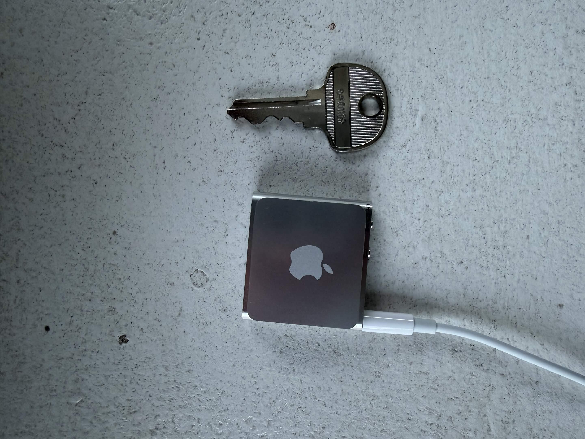
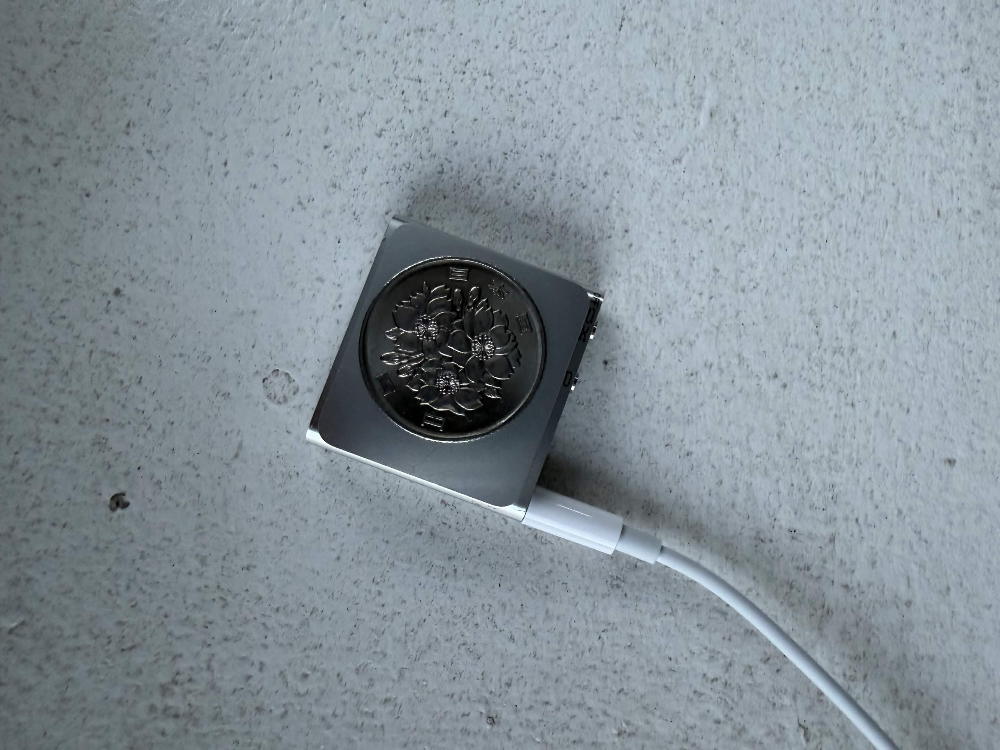
写真で見るより実物はさらに小さい。ほんとにこれ小さくて、チャリの鍵や100円玉と並べても違和感ないくらいのサイズ感！！
エッッグイ‼️😭
今はスマホで音楽を聴くのが当たり前になってるので、「音楽を聴くためだけの機械」がここまで小さいっていうこと自体がなんか新鮮です。
しかも、ただ小さいだけじゃなくて背面がほぼそのままクリップになってる。なのでポケットの中に入れる必要すらない。服に挟んで、そのまま音楽を持ち歩ける✨
機能もめちゃくちゃキヨキヨしい
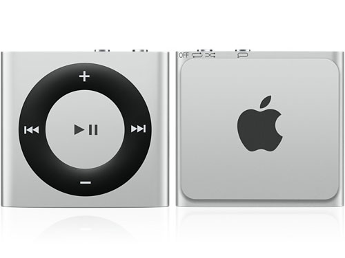
引用：https://kakaku.com/item/K0000417467/?lid=itemview_color#priceList
本体のリング型ボタンで、再生・一時停止、曲送り・曲戻し、音量調整。上部には電源と順再生／ランダム再生を切り替えるスイッチ、曲名やプレイリストを読み上げるVoiceOverボタン、そしてイヤホンジャック。
以上‼️‼️😻
画面すらありません⁉️ 「今どの曲が流れているか」はディスプレイを見るんじゃなくて、ボタンを押して音声で確認する。
今の電子機器って基本的に「画面を見る」ことが前提になってますが、これはむしろ逆。画面をなくして、音楽を聴くことだけに振り切ってる。この割り切り方、今見るとかなりかっこよくないですか⁉️❤️🔥
今みたいにSpotifyやApple Musicを開いて、その場で好きな曲を検索して再生！！みたいなことはできません。なので僕は逆に、一気に滅茶苦茶曲を入れてランダム再生で楽しんでます。
最近は友達から貰った謎のテクノMIXファイルもぶち込みました‼️👊🏻
何が流れてくるか分からない。でも画面がないので、曲を飛ばすためにスマホをずっと触ることもない。アルゴリズムに「あなたへのおすすめ」を選んでもらうんじゃなくて、自分でぶち込んだ信頼したMIX音源の中から偶然流れてきた曲を聴く。
2026年にやると、この不便さが逆に新鮮です🥹✨
実は、前所有者のデータが残っていたんでソ
海の声とかとか！！！
中古で手に入れたんですが、なんと前所有者が使っていたデータがそのまま残ってました。中を見ると、かなり平成っぽいプレイリスト😊💕
こういうのも中古の音楽プレイヤーならではなのかもしれません。昔誰かが実際に持ち歩いて、実際に聴いていた曲が、この小さい機械の中にそのまま残ってる。
単なる「古いApple製品」じゃなくて、ちょっとしたタイムカプセルみたいで面白いです🥺
で、肝心の音は？
普通に悪くない。
もちろん最新のオーディオ機器とスペック勝負するようなものではないですが、街でイヤホン挿して音楽を聴く用途なら普通に楽しめます。
というか、
このサイズで音楽聴けて、服にも付けられるなら世界一有能なクリップなのでは⁉️⁉️😭
と思っています。
ですが、1つ欠点
なんか変なコード使わないと曲入れられないんです⁉️💦😭
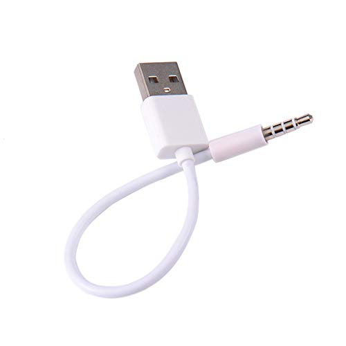
https://amzn.asia/d/0c7glhRB
この謎コードをイヤホンプラグに刺してPCに接続して、iTunesにて曲を入れるんですが、少し面倒です‼️💧なので自分は一気にめっちゃ曲入れてます。
そして本題。これ、ファッションアイテムとしてめちゃくちゃ良くない⁉️❤️🔥
僕が一番面白いと思ったのはここです。
iPod shuffleって「音楽プレイヤー」として見るだけじゃなくて、服に付ける物体として見てもかなり完成されてる。背面がクリップだから、そのまま装いに落とし込める。
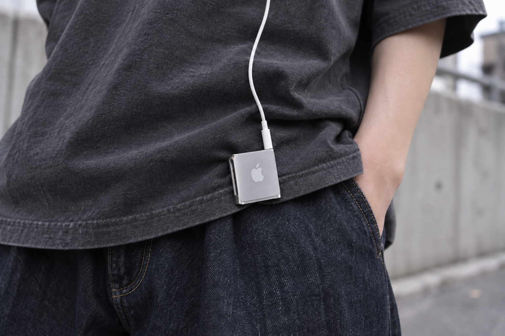
イメージ画像（AI生成）
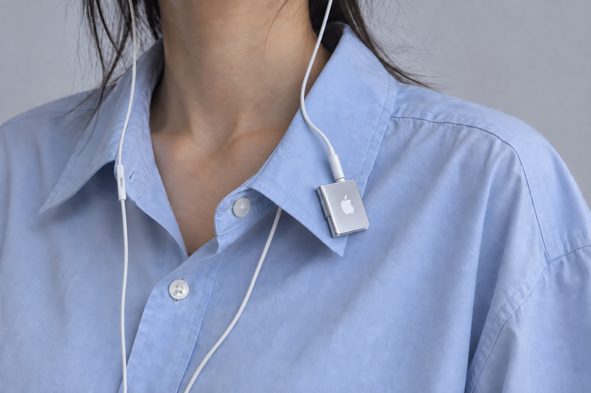
イメージ画像（AI生成）
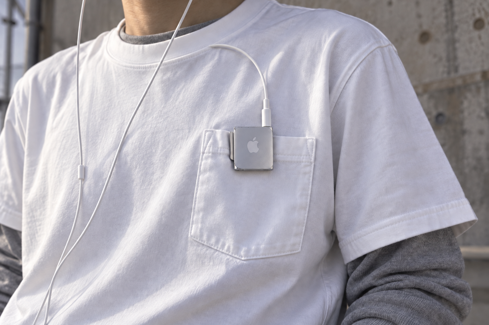
イメージ画像（AI生成）
例えば、①Tシャツの裾。 ここに銀色の小さい物体が一個付いてるだけで、ちょっと違和感が生まれる。
②シャツの襟。 アクセサリーみたいに付けても面白い。
③ポケTのポケット。 これはもうiPod shuffleのためにあるんじゃないかってくらい収まりがいい😻
ネックレスやブローチみたいな「最初から装飾として作られた物」じゃなくて、本来は電子機器なのに、結果としてアクセサリーみたいになってる。
この「アクセサリーとして作られてない」っていうところが、自分はかなり好きです🥺
最初から服を飾るために作られたものじゃない。音楽を持ち歩くために小さくして、邪魔にならないようにクリップを付けて、操作するための最低限のものだけ残した。その結果できた形が、今見ると妙にかっこいい。
クリップもイヤホンジャックもボタンも、本来は全部ただの機能だったはずなのに、今見るとそれ自体がデザインに見えるんです‼️😭
そして、このシルバー。
引用：https://kakaku.com/item/K0000417467/?lid=itemview_color#priceList
個人的にはこの質感もかなり重要だと思ってます☝🏻✨
少し無機質で、工業製品っぽいシルバー。昔のApple製品として見ると懐かしいのに、今のファッションの中に入れると逆に近未来的なパーツにも見える。
この感じ、ファッションでいうとリムレスメガネにちょっと近い属性だと思ってます。存在感はあるけど、ゴテゴテした装飾ではない。冷たい金属感と、プロダクトとしての機能美がそのままアクセサリーになってる。
だからモードっぽい服装に一個だけ付けてもかっこいい。逆にNIKE archiveみたいな、ギミックマシマシのテックファッションに合わせても絶対相性がいい❤️🔥
ポケット、ジップ、コード、ナイロン、リフレクターみたいな機能的ディテールの中に、本当に機能する電子機器としてiPod shuffleを混ぜる。
「テックっぽい装飾」じゃなくて「本物のテック」が付いてる‼️❤️🔥
iPodは「古いガジェット」で終わるのか？
たぶん今のiPod shuffleって、多くの人からしたら「昔使ってた懐かしいApple製品」だと思います。でも僕は、もう一回違う見方ができる気がしてます👀
音楽プレイヤーとしての性能だけを見るんじゃなくて、小ささ、クリップという構造、アルミっぽい無機質な質感、画面のない潔さ、Appleという記号、2000年代のデジタルプロダクト感。
当時はあまりにも普通に使われていたから、わざわざ「デザイン」として見てなかった部分も多いと思います。
有線イヤホンだってそうです。当時はワイヤレスが当たり前じゃないから線が付いていただけ。でも今見ると、そのコードが服の上を通ってiPodまで伸びてる姿も含めて一つの見た目に感じる。
これって古い服を見る感覚と少し似てる気がします🥺
当時は普通だったシルエットとか素材とかディテールが、時間が経って流行から一回離れたことで、逆に「こんな形してたんだ」とちゃんと見えるようになる。
iPodも同じで、音楽プレイヤーとして当たり前じゃなくなったからこそ、初めてこの小ささとか、クリップとか、シルバーの質感そのものを見られるようになったのかもしれません。
だから自分は、単に「昔のものだから懐かしくてかっこいい」とはあまり思ってないです。
古くなったことで、本来は機能だったものがデザインとして見えてきた‼️
そこがiPodを今見る面白さなんじゃないかなと思ってます
服だけじゃなくて、当時のガジェットまで含めてarchiveとして見る。そう考えるとiPod、まだまだ掘れるんじゃないでしょうか⁉️✨
BALENCIAGAとApple製品の関係性
ここまで「古いApple製品をファッションとして見る」みたいな話を勝手にしてきましたが、実はこの感覚、完全に僕だけの妄想でもないんです👀
ここで出てくるのが、デムナ期のBALENCIAGA。
BALENCIAGAとAppleがコラボ！とか、そういう話ではありません。でもデムナ期のBALENCIAGAを見てると、Apple製品、特にiPhoneという物体が絶妙なところで出てきます。
BALENCIAGA、バリバリに傷のついたiPhoneを招待状にする。
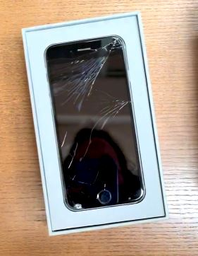
引用：https://www.instagram.com/reel/CamsC0JLUQi/?utm_source=ig_web_button_share_sheet
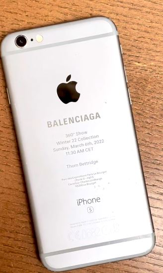
特に話題になったのが2022年。
BALENCIAGAのFall/Winter 2022「360° Show」で、ゲストに送られた招待状が各SNSで話題になりました。
普通なら紙とかカードが招待状になるじゃないですか。でもBALENCIAGAが送ったのは、
画面がバキバキに割れた古いiPhone⁉️⁉️🤯
使い古され、壊れたiPhone 6sの背面に、ゲストの名前やショーの日時などを刻印して招待状にしていたのです‼️
しかも、このiPhoneは「This is a genuine artifact from the year 2022（これは2022年の本物のアーティファクトです）」と説明されていました。
これ、めちゃくちゃ面白くないですか⁉️❤️🔥
iPhoneって普通⤵︎ ︎
新型が出る
↓
古くなる
↓
傷が付く
↓
価値が下がる
↓
買い替える
というのが定石です。
でもBALENCIAGAは、その価値が落ちていくはずの「古くて、傷だらけで、壊れたiPhone」を拾い上げて、ショーの招待状という特別な物体にしてしまった。
バキバキの旧型iPhoneがBALENCIAGAのショーの招待状になった瞬間、ただの型落ちじゃなくて「2022年の遺物」になる‼️
これって、自分がiPodに対して思ってることに近いのでは⁉️⁉️🥺
iPhoneが「2022年の遺物」なら、iPodは「2000年代の遺物」なのでは⁉️
ここでiPod shuffleに戻ります。
2000年代には普通に音楽を聴くための機械だったiPod。でも今はスマホとストリーミングがあるので、音楽プレイヤーとして絶対に必要なものではありません。
本来の役割から少し離れ始めてる。
でも役割を失ったことで、逆にその物体の「見た目」が見えてくる。
小さい＋クリップ＋シルバー＋有線イヤホン＋画面なし＋Appleロゴ＋2000年代特有のデジタル感
音楽プレイヤーとして当たり前に使われていた時代には、ただの「機能」だった部分が、2026年に見ると全部デザインとして見えてくる。
これ、服のarchiveと結構似てる気がします。
昔流行った服が、20年経って「コーティング生地のパンツやばくね？」って再理解される。それと同じノリで、電子機器だって同じことが起きてもよくない⁉️⁉️🫵🏻
と思うんです。
デムナ、今度はスマホでルックブックを撮る。
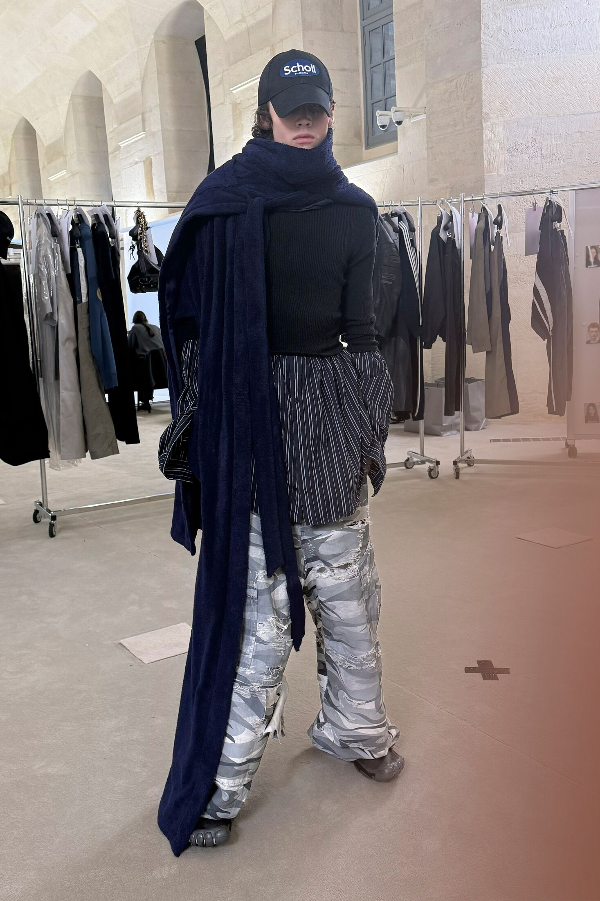
引用：https://www.balenciaga.com/en-us/fall-25?start=12
BALENCIAGAの2025年Pre-Fall。
このルックブックは、ルックのスタイリングを仕上げる際に使われる「internal-use」画像として、デムナが自身の携帯電話で撮影したと公式に説明されています。
これも面白い。
ファッションブランドのルックブックって、本来ならカメラマンがいて、照明があって、ロケーションを作って〜みたいな「完成された写真」を想像するじゃないですか。
なのに、
スマホで撮る⁉️
数年前には壊れたスマホを招待状にして、今度はスマホで撮った写真をルックブックとして出す。
この2つが公式に一つのコンセプトとして繋がっているわけではないですし、BALENCIAGAとAppleが直接何かを一緒にやったという話でもありません。
ただ、こうやって並べてみるとApple製品がちょいちょい出てくる。
自分はそこが気になりました👀✨
Apple製品って新品の時はあんなにツルツルで綺麗なのに、使っていけばアルミに傷が付くし、最新だったモデルもいつか旧型になる。そして最後には「昔のもの」になる。
そうやってちょっとボロくなったApple製品を見ると、急にBALENCIAGAの服と一緒に置いても違和感のない小物に見えてくるんですよね🥺
だからiPodを服に付けたい。
ここまで来ると、僕がiPod shuffleをTシャツの裾とか襟に付けたくなる理由も、なんとなく分かってもらえると思います。
単純に「昔のiPodかわいい〜😊💕」だけじゃない。
2000年代に「未来の音楽プレイヤー」だったものが、20年近く経って、今度は
過去に作られた未来っぽいアクセサリー
に見えてくる。
(若干猿の惑星イメージ🙀)
最新のガジェットを付けて未来っぽくするんじゃなくて、
昔のガジェットを付けて未来っぽくする‼️❤️🔥
リムレスメガネとか、昔のNIKE archiveとかと一緒にiPod shuffleを付けたら、もう普通にファッションとして成立するんじゃないでしょうか⁉️
なので最終的にはみんなの頭の中を
Apple ＝ iPod ＝ BALENCIAGA ＝ デムナ
にして、
iPodのファッション的価値を勝手に高めてやりたい‼デス🥺︎
古い服をarchiveとして漁るように、古いデジカメ。古い携帯。古いイヤホン。そして古いiPod。
そういう「デジタルarchive」をファッションとして落とし込むために掘る時代、普通に来るんじゃない❓👀✨
サブカル消費はNo‼️😡💢
ということで、
お前の家の引き出しに眠ってるiPod募集中‼️‼️🫵🏻💖
ﾜｰｵ( ö )